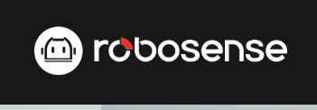
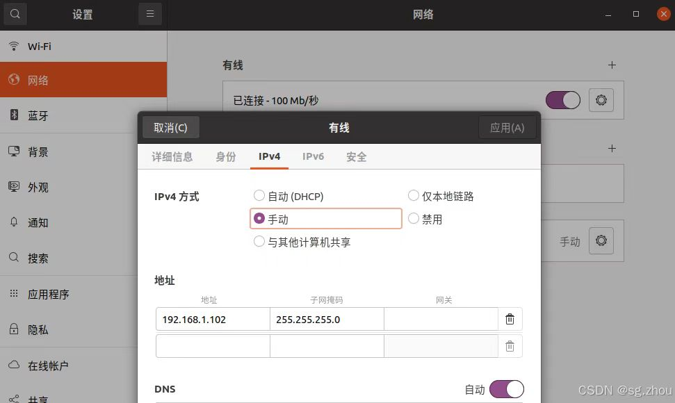
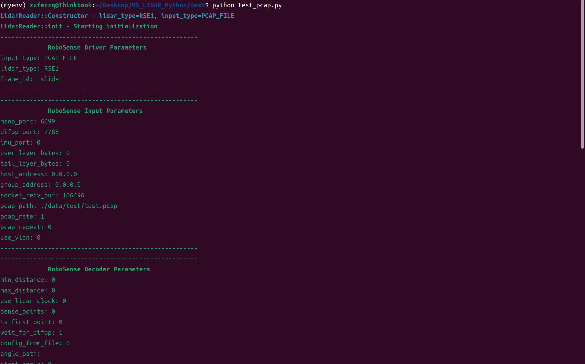

依赖声明

本项目基于 RoboSense LiDAR SDK——rs_driver（版权所有 © 2020 RoboSense）开发，遵循其3-clause BSD License协议。
使用前请确保已获取RoboSense SDK的合法授权（商业使用需联系RoboSense获取授权）。
rs_driver_update基于rs_driver进行了小部分修改
编译安装
源码文件夹
- rs_driver_update
- rs_lidar_pyhton
先决条件
- 设置ip

-查看是否可以ping通
bash : ping 192.168.1.102 - C++编译器支持：g++ >= 7.0(C++17)
- CMake >= 3.10
- Python编译器支持：3.6<=Python<=3.14
- rs_driver_update依赖：
sudo apt-get install libpcap-dev
libeigen3-dev libboost-dev libpcl-dev
- rs_lidar_pyhton依赖：
- 在RS_LIDAR_Python目录下执行
pip install -r ./rs_lidar_pyhton/requirements.txt
- 确认rs_lidar_python中rs_driver安装路径(默认已经设置好了,一般不需要修改)
setup.py
def get_extensions():
# 头文件路径（适配RoboSense SDK安装路径）
rs_driver_include = os.getenv("RS_DRIVER_INCLUDE",
"/usr/local/rs_driver/include/") # RoboSense rs_driver头文件路径
rs_driver_update编译安装
- 在RS_LIDAR_Python目录下执行
cd rs_driver_update
mkdir build && cd build
cmake .. && make -j4
- 若编译失败可以尝试修改CMakeLists.txt中
option(COMPILE_TOOL_VIEWER "Build point cloud visualization tool" ON)
option(COMPILE_TOOL_PCDSAVER "Build point cloud pcd saver tool" ON)
option(COMPILE_TESTS "Build rs_driver unit tests" ON)
ON->OFF不影响python包的使用
4. sudo make install
rs_lidar_pyhton编译安装
- RS_LIDAR_Python目录下执行
cd rs_lidar_pyhton/src
python setup.py bdist_wheel
pip install dist/*.whl
pip show rs_lidar
- pip show
pip show rs_lidar
- 输出
Name: rs_lidar
Version: 0.1.0
Summary: 基于RoboSense LiDAR SDK的Python/封装库，支持在线/PCAP点云读取与Numpy转换
Home-page: https://github.com/GoldenPigeon123
Author: Zhejiang University of Finance and Economics - Point Cloud Team:
Zhang Zhongqain , Li Huaiyuan , Cao Yiyun
浙江财经大学信息技术与人工智能学院点云组:张忠谦,李怀苑,曹宜云
Author-email: 2789632062@qq.com
License: BSD-3-Clause
Location: /home/zufezzq/.local/lib/python3.10/site-packages
Requires: numpy, pybind11
Required-by:
快速测试
在RS_LIDAR_Python目录下执行
cd test
python test_pcap.py

若无效请尝试
# 关闭防火墙
sudo ufw disable || true
使用说明
1. 导入rs_lidar 库
import rs_lidar
2. 创建Lidar对象
请选择好你的Lidar类型，以及工作模式，确认msop_port与difop_port端口，然后初始化并启动Lidar
ONLINE_LIDAR：在线雷达模式
reader = rs_lidar.LidarReader("RSE1", "ONLINE_LIDAR", 6699, 7788)
reader.init()
reader.start()
PCAP_FILE：PCAP文件模式
reader = rs_lidar.LidarReader("RSE1", "PCAP_FILE", 6699, 7788)
reader.set_pcap_path("your.pcap")
3.初始化并启动Lidar
reader.init()
reader.start()
4. 获取点云数据并转换为Numpy数组
cloud=reader.getPointCloud()
points_np = cloud.to_numpy()
5. 释放资源
reader.freePointCloud(cloud)
6. 关闭Lidar
reader.close()
详细API
核心类与结构概览

详细API说明
核心类LidarReader
- 构造方法
rs_lidar.LidarReader(lidar_type_str="RSE1", input_type_str="ONLINE_LIDAR",
msop_port=6699, difop_port=7788)
-
参数说明

-
方法说明

点云消息类：PointCloudMsg
-
属性说明

-
方法说明

点结构体类：PointXYZI
-
属性说明

-
方法说明

异常捕获

联系我们

- 学校：浙江财经大学
- 地址：浙江省杭州市下沙高教园区学源街18号
- 团队：浙江财经大学信息技术与人工智能学院点云组
- 邮箱：2789632062@qq.com
- GitHub: https://github.com/GoldenPigeon123
附录
rs_driver_update基于rs_driver进行了小部分修改，修改点如下：
rs_driver修改点
inline InputType strToInputType(const std::string& type)
{
static const std::unordered_map<std::string, InputType> strInputTypeMap = {
{"ONLINE_LIDAR", InputType::ONLINE_LIDAR},
{"PCAP_FILE", InputType::PCAP_FILE},
{"RAW_PACKET", InputType::RAW_PACKET}
};
auto it = strInputTypeMap.find(type);
if (it != strInputTypeMap.end()) {
return it->second;
} else {
RS_ERROR << "Wrong input type: " << type << RS_REND;
RS_ERROR << "Please give correct type: ONLINE_LIDAR, PCAP_FILE, RAW_PACKET." << RS_REND;
exit(-1);
}
}
struct DeviceInfo{
void print(){
RS_INFO << "------------------------------------------------------" << RS_REND;
RS_INFO << " RoboSense Device Info " << RS_REND;
RS_INFOL << "state: " << state << RS_REND;
RS_INFOL << "sn: " << sn << RS_REND;
RS_INFOL << "mac: " << mac << RS_REND;
RS_INFOL << "top_ver: " << top_ver << RS_REND;
RS_INFOL << "bottom_ver: " << bottom_ver << RS_REND;
RS_INFOL << "------------------------------------------------------" << RS_REND;
}
}
struct DeviceStatus{
void print(){
RS_INFO << "------------------------------------------------------" << RS_REND;
RS_INFO << " RoboSense Device Status " << RS_REND;
RS_INFOL << "state: " << state << RS_REND;
RS_INFOL << "voltage: " << voltage << RS_REND;
RS_INFO << "------------------------------------------------------" << RS_REND;
};
}